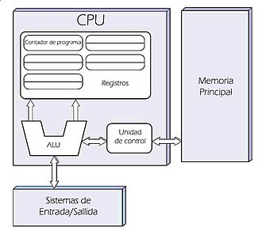

Arquitectura Von Neumann
La arquitectura de Von Neumann es un modelo fundamental en la computación. Se basa en la idea de almacenar tanto los datos como las instrucciones de un programa en una única memoria compartida. Los componentes clave son:
Unidad de Control (UC): Coordina el flujo de datos y las instrucciones en el sistema.Unidad Aritmético-Lógica (ALU): Realiza las operaciones matemáticas y lógicas.
Memoria: Almacena las instrucciones y datos que se están utilizando en ese momento.
Entrada/Salida (E/S): Permite la interacción con el usuario o el sistema externo.
Una de las limitaciones de esta arquitectura es el denominado "cuello de botella de Von Neumann", que ocurre cuando la CPU tiene que acceder a la memoria para obtener tanto instrucciones como datos, lo que ralentiza el procesamiento.> 